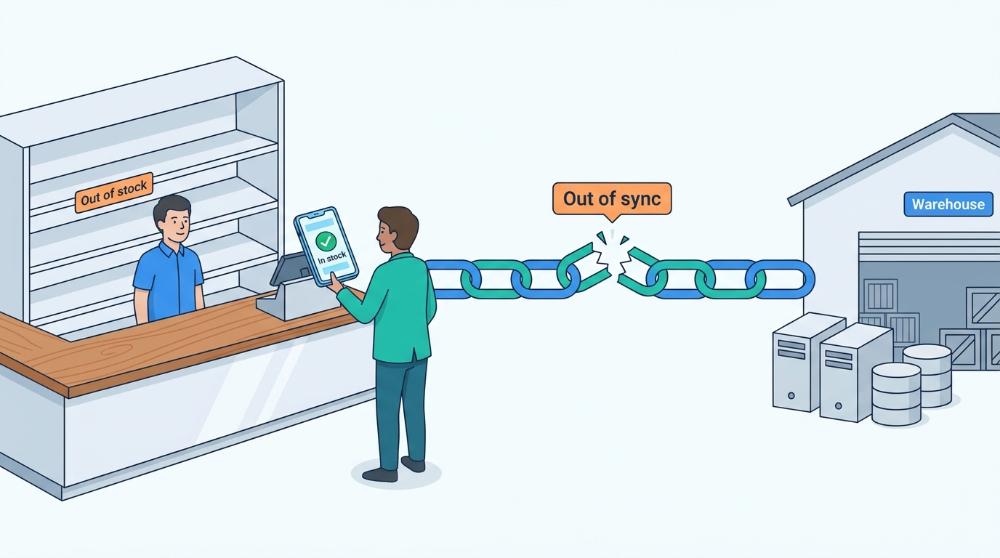

Preface
Out of Stock, Out of Sync: Sixteen Ways Commerce Platforms Go Wrong
AI-assisted: researched and written with Claude Code and Codex; illustrations generated with Gemini and OpenAI image tools. How this works

Preface
AI-assisted: researched and written with Claude Code and Codex; illustrations generated with Gemini and OpenAI image tools. How this works
